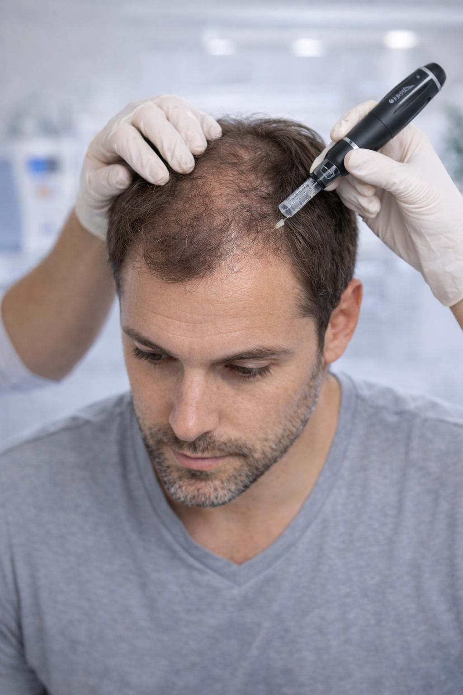
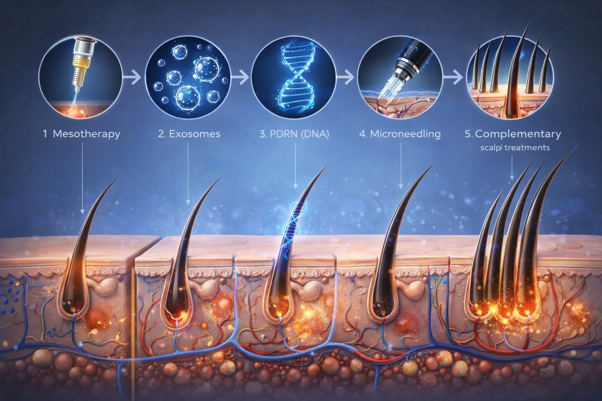

פרוטוקול שיקום שיער מלא ומותאם אישית


Hair Rehab הוא פרוטוקול שיקום שיער מקיף — לא טיפול בודד, אלא תוכנית מלאה המשלבת מספר טיפולים ביולוגיים מתקדמים, הנחיות לטיפול ביתי ומעקב שוטף לאורך כל התהליך.
הפרוטוקול מיועד למי שהנשירה כבר השפיעה על הצפיפות, האיכות והמראה של השיער — ומחפש שיקום אמיתי ולא שיפור שטחי בלבד.
Hair Rehab הוא פרוטוקול מובנה שמטפל בנשירה ובשיקום השיער בשלושה מישורים במקביל:
בדיקת סוג הנשירה, מצב הזקיקים, הקרקפת וגורמים רפואיים. בניית מפת טיפול אישית.
החדרת ויטמינים, מינרלים וגורמי גדילה ישירות לקרקפת לתזונת הזקיקים.
טכנולוגיה ביולוגית מתקדמת לחידוש פעילות תאי הגזע של הזקיקים.
שיקום רקמת הקרקפת, שיפור זרימת דם ועידוד תהליכי ריפוי עמוקים.
הנחיות ומוצרים ייעודיים לתמיכה בתהליך בין הטיפולים.
הערכת התוצאות לאורך הסדרה ועדכון הפרוטוקול לפי הצורך.
השיפור הוא הדרגתי ומצטבר — התוצאות הטובות ביותר נראות לאחר השלמת הפרוטוקול המלא.
ברויאל-מד אנו מאמינים שניתן לשקם שיער שנחלש — עם הגישה הנכונה, הטכנולוגיה המתאימה והתאמה אישית מדויקת. זהו לא עוד טיפול — זהו תהליך שיקום מלא.
להתאמת פרוטוקול שיקום אישי על בסיס אבחון מקצועי — ניתן לתאם שיחת ייעוץ ללא עלות וללא התחייבות.
תיאום תור טלפוני ללא עלות